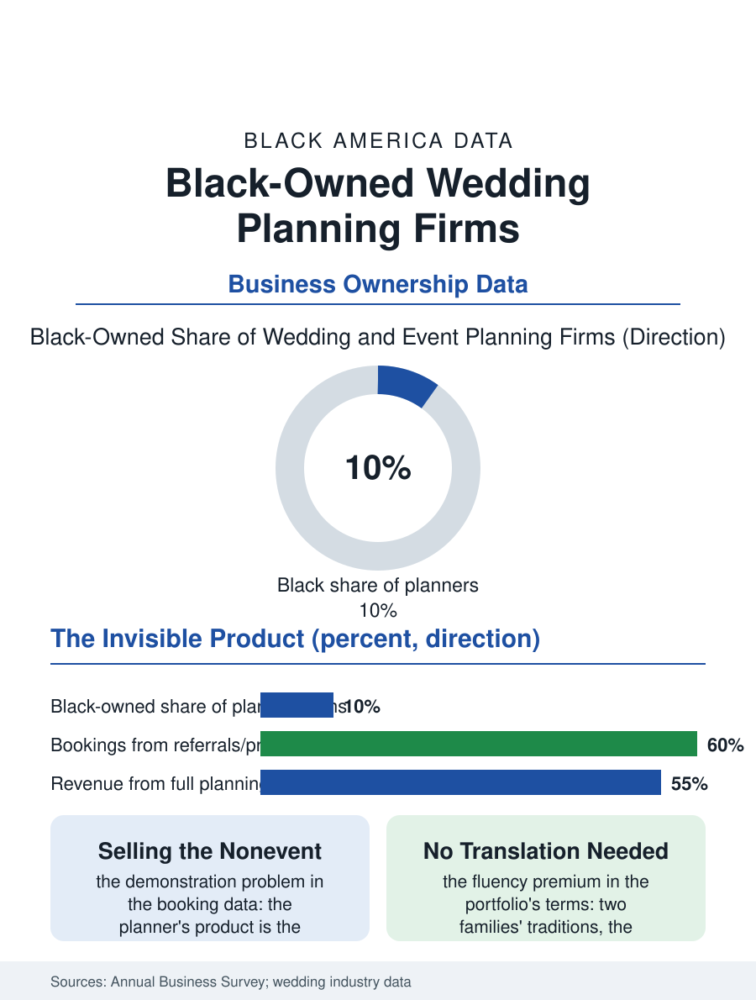

Black Business
Selling the Nonevent: Black-Owned Wedding Planning Firms
The general contractors of joy sell the crisis that never happened, on a vendor book and a fluency that needs no translation. The planning file.

The wedding planner is the celebration economy's general contractor, and the Black-owned planning firm sells the fluency the venue file priced together with the logistics the event's hundred vendors require, in a trade whose entry is a reputation and whose ceiling is the destination market's clientele. The business census folds the planners into the event services categories. This article reads the planning file.
The General Contractor of Joy
The planner's product is the invisible one the clients price last and value most in retrospect: the vendor team's assembly, the timeline's governance, the crisis absorbed before it reaches the couple, a competence whose demonstration is the nonevent, which makes the trade's marketing a study in the referral's power, the venue's preferred list and the photographer's recommendation being the channels the booking data name, ahead of the platforms whose lead fees the firms increasingly refuse. The Black planner's market position is the fluency premium in its planning form: the wedding whose traditions the couple's families hold in two versions, the broom and the bouquet, the money dance's etiquette and the repast's logistics for the week's other gathering, requires no translation meetings with this firm, and the portfolio that proves it, the styled shoots and the published features, is the firm's capital investment, produced at the firm's expense in the industry's standard speculation. The fee models divide the trade: the flat package, the percentage of the budget whose incentives the ethicists debate, and the month-of coordination tier that is the volume business, the firm selling the final month's governance to the couples who planned the rest, a product whose margin is the planner's calendar density across the season's Saturdays. The corporate and social tier beyond the wedding fills the firm's weekdays and its winter: the galas, the brand launches, the milestone birthdays whose budgets follow the wedding's template into the year-round calendar, and the firms that build that book convert the seasonal trade into the annual practice, their planners' calendars reading less like a season's Saturdays and more like the venue's own ledger.
Vendors, Venues, and the Preferred List
The firm's real asset is its vendor book, the florists and bands and bakers whose reliability the planner stakes the reputation on, and the book's construction is the trade's apprenticeship, served as the assistant on the day and the associate in the office before the firm's own name goes on the contract. The preferred list economy governs the venue relationship in both directions: the venue's list is the planner's steadiest lead source and its toll is the reciprocal referral, an arrangement the platforms are disintermediating at the search's top while the day's execution keeps the relationship's value in the professionals' own market. The destination tier is the file's summit: the planner whose practice travels, the island and vineyard weddings of the affluent clientele, priced at multiples of the local book and allocated by the publication features and the planner-of-the-planner referrals of the celebrity tier, a summit whose Black occupancy in the current features is small, celebrated, and, in the trade press's account, growing on the strength of the destination market's own diversification.
The Day and the Ledger
The planning file closes on the trade's emotional economics, which its practitioners state plainly: the firm sells its calm, on the day the client's family system is at its most combustible, and the Black planner's book carries the additional ledger of the community's celebrations entire, the weddings that are also reunions, the repasts that are also homecomings, the calendar the venue file's keel describes from the property's side, planned from the coordinator's side by the firms who know both ledgers by heart. The industry's professionalization, the certifications and the associations' standards, proceeds in the pattern of the other celebration trades, the Black planners' association chapters running the mentorship the general bodies' composition makes necessary. The census counts the event firms in the thousands across the categories. The file's last entry is the timeline's final line on the planner's clipboard, the sparkler exit at the hour the venue's contract ends, executed to the minute by a firm whose product was that nothing the couple remembers went wrong, the most expensive invisibility in the celebration economy, sold by the hour and remembered for the lifetime the photographs keep.
More in Black Business
Black-Owned Businesses: Counts, Receipts, and the Representation Gap
About 161,000 Black-owned employer firms and three million solo ventures: how the Census Bureau counts Black business ownership, where firms concentrate, and the gap between population share and business share.
Black Median Net Worth: The Wealth Gap in Federal Reserve Data
The Federal Reserve puts Black median family net worth at $44,900, against $285,000 for White families — about 16 cents on the dollar. The widest gap in economic data.
Black Buying Power: The $1.8 Trillion Consumer Economy
Black buying power is estimated at about $1.8 trillion — larger than the economy of most nations. What the figure measures, who produces it, and what it buys.
Source: U.S. Census Bureau, Annual Business Survey for event planning services; The Knot and wedding industry market reports.